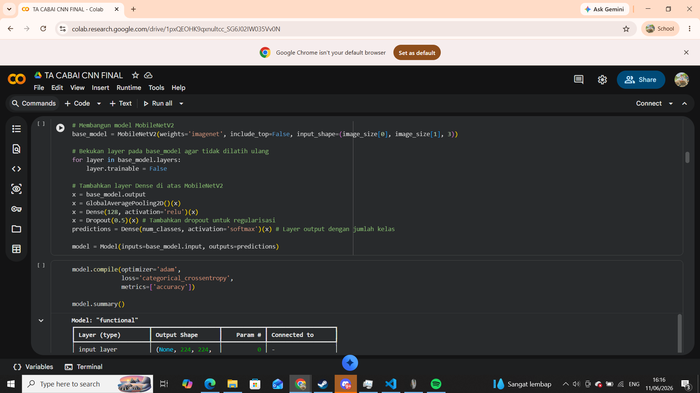
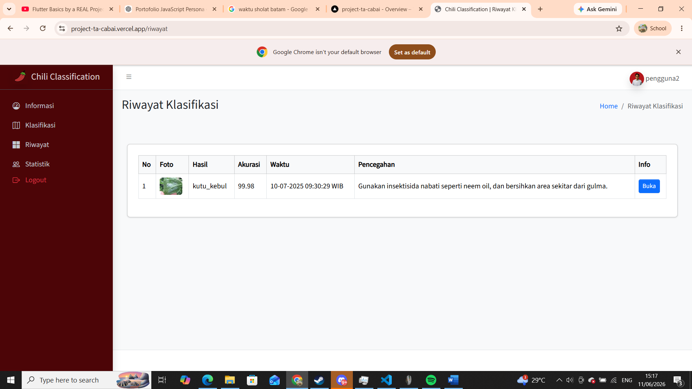
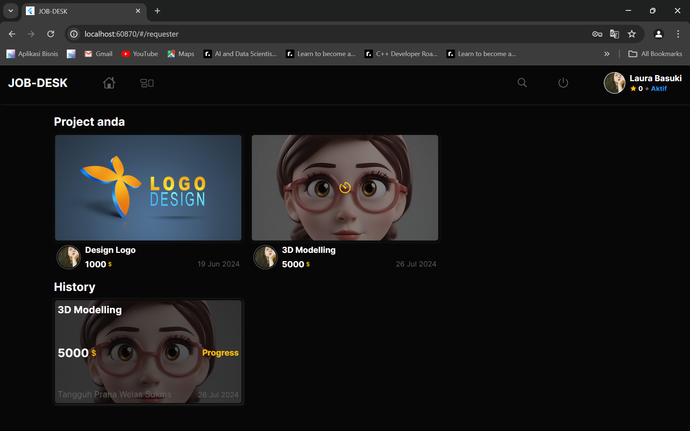
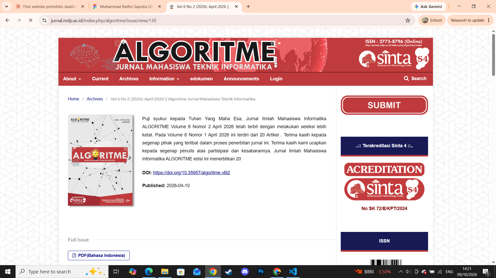
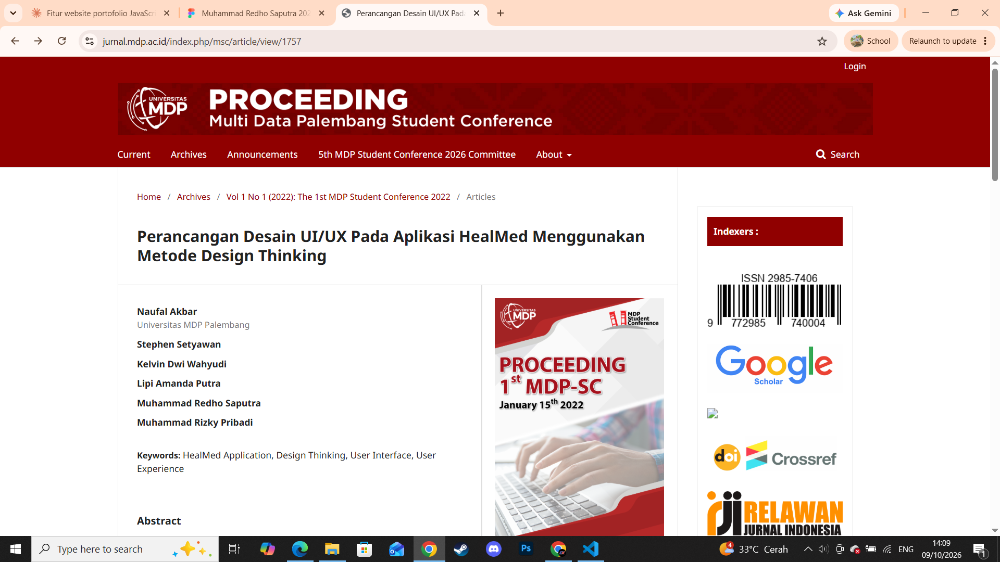

Merancang produk digital yang terasa hidup.
Saya Redho, |
Membangun antarmuka web, aplikasi, machine learning, dan data science yang cepat, rapi, dan enak dipakai dari riset kecil sampai peluncuran skala penuh.
Tentang Saya
Saya Redho, programmer yang membangun aplikasi web, aplikasi mobile, dan model machine learning. Perjalanan saya dimulai dari mengutak-atik WordPress, lalu berkembang ke Laravel, Flutter, dan data science.
Sekarang saya fokus pada pengembangan full-stack: membuat aplikasi yang cepat, mudah dipakai, dan mudah dirawat, dari database sampai tampilan.
- Fokus Full-stack, Mobile, Machine Learning
- Stack utama Laravel · Flutter · Python
- Status Terbuka untuk proyek dan kolaborasi
-
01
Web Development
Membangun sistem web full-stack dengan Laravel, JavaScript, dan MySQL.
-
02
Mobile App
Membuat aplikasi mobile lintas platform dengan Flutter.
-
03
Machine Learning
Melatih dan mengevaluasi model dengan Python, seperti klasifikasi citra dengan CNN.
-
04
Data Science
Membersihkan dan mengolah data mentah dengan Python sebelum dianalisis atau dilatih.
Perjalanan Belajar
-
Tahap 1 Dasar Pemrograman Mulai mengutak-atik bahasa pemrograman
-
Tahap 2 Laravel Membangun sistem web full-stack
-
Tahap 3 Flutter Masuk ke pengembangan mobile
-
Tahap 4 Machine Learning Klasifikasi citra dengan CNN
Keahlian Teknis
Tools dan bahasa yang saya pakai sehari-hari, dengan tingkat kenyamanan masing-masing.
Karya Pilihan
Beberapa proyek yang mewakili cara saya bekerja.

Klasifikasi Penyakit Daun Cabai
Membuat model MobileNetV2 dengan algoritma CNN agar program dapat mengenali penyakit pada daun cabai.

Website Klasifikasi Penyakit Daun Cabai
Website Laravel yang menjalankan model MobileNetV2 hasil deploy untuk mengklasifikasi penyakit daun cabai.

Website Flutter, PT Pupuk Sriwidjaja
Membuat website berbasis Flutter untuk kebutuhan pekerjaan sampingan karyawan PT Pupuk Sriwidjaja (Pusri).

Klasifikasi Penyakit Daun Cabai
Jurnal Algoritme MDP (Sinta 4), terbit 2026 dari hasil skripsi tahun 2025. Baca jurnal

Desain UI/UX Aplikasi HEALMED
Perancangan UI/UX aplikasi kesehatan HEALMED untuk kebutuhan kesehatan masyarakat. Baca jurnal
Cara Saya Bekerja
Lima tahap yang saya lalui di setiap proyek, dari ide sampai rilis.
Discovery
Memahami tujuan, pengguna, dan batasan proyek.
Desain
Menyusun alur dan tampilan bersama tim desain.
Pengembangan
Menulis kode dengan iterasi dan review berkala.
Pengujian
Memastikan performa dan kompatibilitas lintas perangkat.
Peluncuran
Rilis, pemantauan, dan dukungan pasca-rilis.
Pendidikan & Sertifikasi
Latar belakang belajar dan pencapaian formal.
S1 Informatika
Universitas Multi Data Palembang
Database Administrator
Sertifikat atau kursus terkait database BNSP.
Punya proyek yang ingin dibangun?
Ceritakan idenya, saya bantu wujudkan jadi produk digital yang siap dipakai dan digunakan.